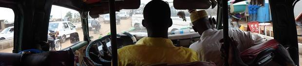
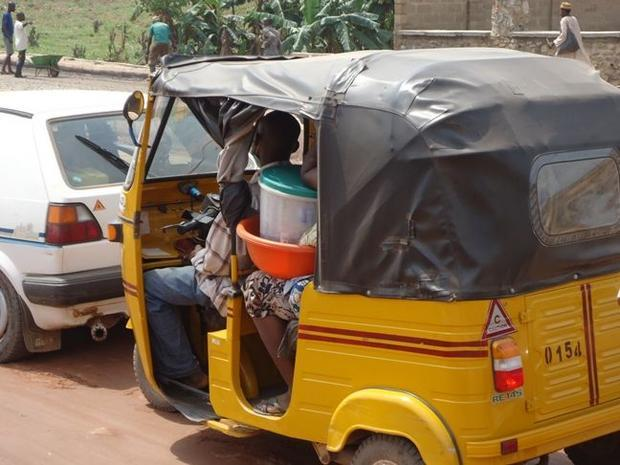
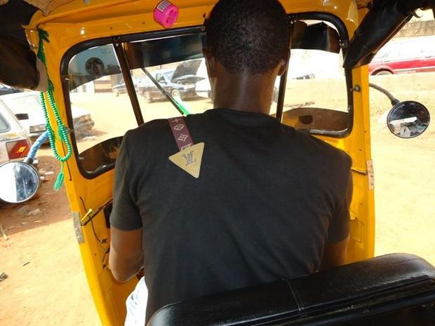
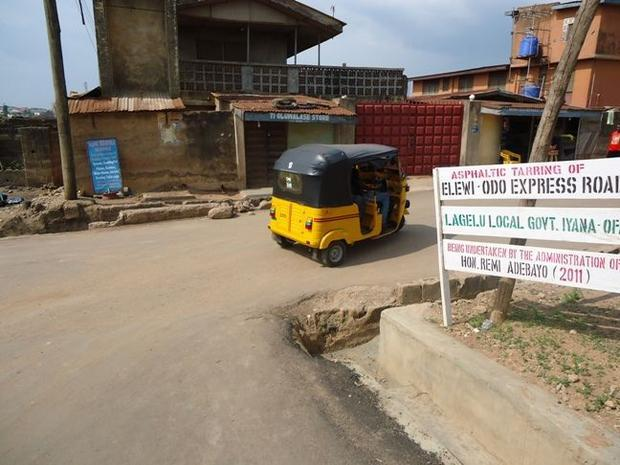
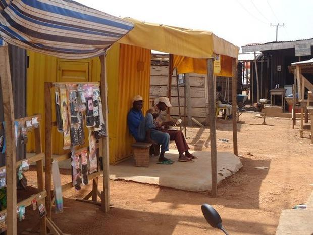

Governor Ajibola Ajimobi of Oyo State, recently launched 1,000 tricycles at the Mass Transit Park in Sango, Ibadan. Ajimobi explained that the tricycles were named "Keke Ajumose" to reflect the spirit of collective effort ("Ajumose," in the Yoruba language, means: "collaboration"). The governor said introduction of the tricycles was part of the state government's youth poverty alleviation scheme, with government providing soft loans to qualified applicants for purchase of the cheap tricycles.
The government-sponsored scheme aims to provide an alternative to the popular commercial motorcycles ("okada"). There have, in recent years, been increasing complaints about the menace of motorcycle riders on major roads in the city. The previous state government had moved to enact legislation banning okada riders from major roads and highways. The introduction of "Keke Ajumose" is part of the move to replace okada with tricycles on the major roads.
Keke Ajumose parked at an okada terminus
Governor Ajimobi, in his launch speech, claimed there has been a major increase in accident cases, with more than 70 percent of cases being related to the recklessness of okada riders. Drivers in the city have for long complained about okada motorcyclists. A "Danfo" bus driver in the city of Ibadan, Taiwo Abbas, told
Digital Journal reporter he would be happy to see okada phased out from major roads in the city. He said: "The average okada rider knows nothing about traffic rules and regulations. They are a menace to road users."
Keke Ajumose rider plying the Gate-Mokola route

Inside Abbas's "Danfo" bus at Gate, Ibadan
The governor, however, tried to reassure commercial motorcycle operators that the state government was not working against them but in the interest of people of Oyo State in general. The goal, according to the governor, is to improve upon safety on state roads. He
said that executive members of Amalgamated Commercial Motorcycles Owners and Riders Association (ACOMORAN) have been carried along in the scheme and that members of the association who wish to purchase the new tricycles may do so through the loan facility provided by government through the association.

Keke Ajumose caught in a traffic hold up. Motorcycles, in spite of the risk, remain the fastest means of transportation
Digital Journal reporter sampled the opinion of Taju, an okada rider, plying the Ojaa Basorun-Olorombo-Amuda route, on the introduction of Keke Ajumose. He said that okada riders do not feel threatened by the new tricycles. He pointed to the fact that okada riders accommodate them at their terminus as evidence of partnership between motorcycle and tricycle operators. He was confident that people will continue patronizing okada because ultimately, okada is the fastest means of transportation available in the city. He said: "People will always need okada to beat traffic jams and holdups."

Digital Journal reporter took a tricyle ride at Elewi-Odo

Honorable Remi Adebayo: "Asphaltic tarring of Elewi-Odo Road"
Keke Ajumose. The Gate-Mokola road is being dualized to ease traffic congestion

Okada rider with passenger along Gate-Mokola road. Note the nose cover he is wearing

Okada riders await passengers at their Elewi-Odo makeshift terminus. But Digital Journal reporter preferred Keke Ajumose
Another okada rider, Bayo, who operates in Elewi-Odo, said there simply are not enough tricycles on the roads to threaten okada riders.But when
Digital Journal reporter informed him that the state government was planning to introduce more tricycles and gradually phase out okada from major roads, he looked perturbed and expressed the hope that the state government would not ban them from the roads. He said: "This is my only means of livelihood."